本教程将在windows上平台使用CPU/GPU进行训练，若你的电脑非windows系统或者为办公用笔记本，那么本教程可能不太适用于你。
下载k210固件，在
kflash_gui里打开你下载完成的k210固件。使用数据线连接上k210，此时端口选项里会新增COMx，选择新增的COMx，下载即可（下载进度条未动则说明可能连接错误的COMx，下拉选择框选择其余的试一试）。
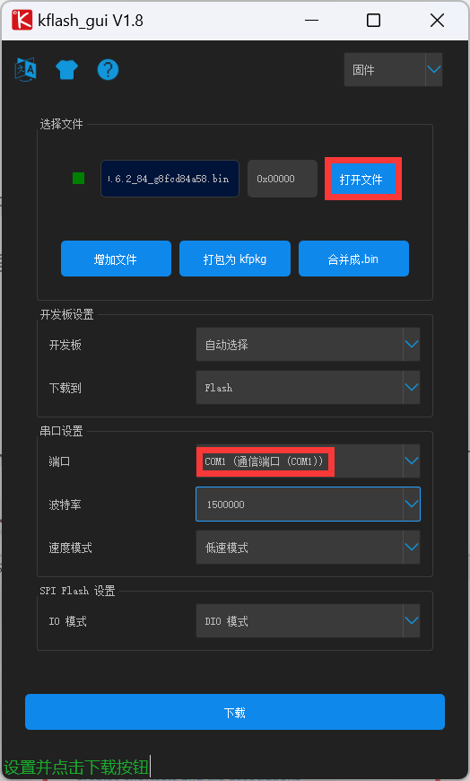
有一定深度学习经验的读者可以自行使用 Anaconda 管理你的 python 环境。对于小白，则可以直接安装该文件。
注意安装时先勾选下面的 Add Python 3.8 to PATH 。
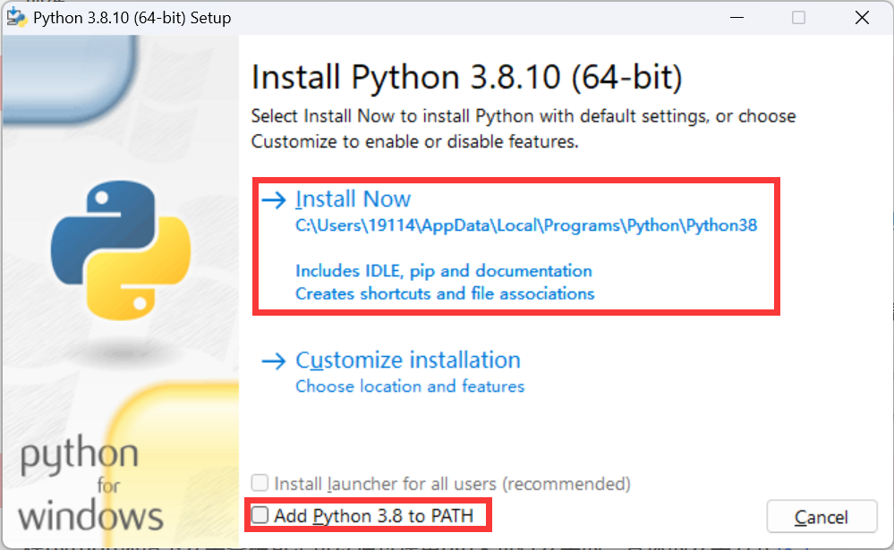
安装之后的python，按win+r，输入cmd打开命令行，然后输入python+回车，出现下图则表示python安装成功。
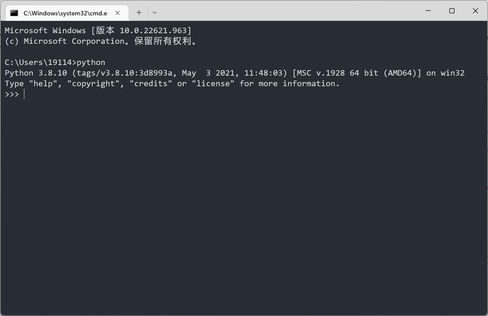
对于模型的训练，可以使用CPU或者是GPU。如果你的电脑安装有 NVIDIA 显卡（桌面右下角有下图所示绿色图标），那么恭喜你，你可以使用GPU加速模型的训练；如果没有，那么你可以点击这里跳过教程的本部，直接使用CPU进行训练。
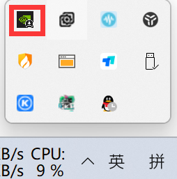
不同版本的CUDA有所对应不同的显卡驱动版本要求，这里推荐使用CUDA10.1版本。
点击这里,选择你对应的显卡型号，下载对应的显卡驱动，然后打开文件夹，进行显卡驱动的安装。
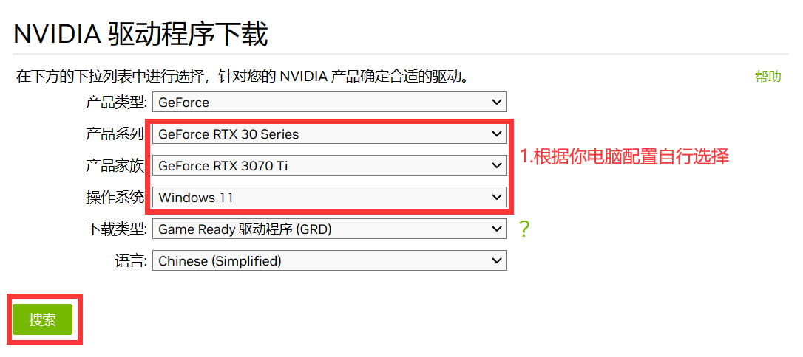
打开cuda10.1下载的链接，选择对应的系统版本和下载方式（win11 和win10 都选择Version 10）。
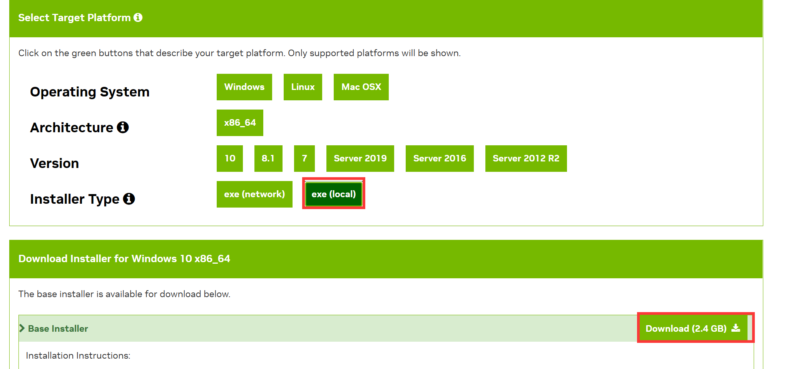
点击Download进行下载，这个网页可能打开的比较慢。下载好的安装包，直接打开，然后一直点下一步就好了。
对于CUDNN下载，由于这个网页没有科学上网的情况下打开是比较慢的。
点击这里，下载 cuDNN v7.6.5 (November 5th, 2019), for CUDA 10.1
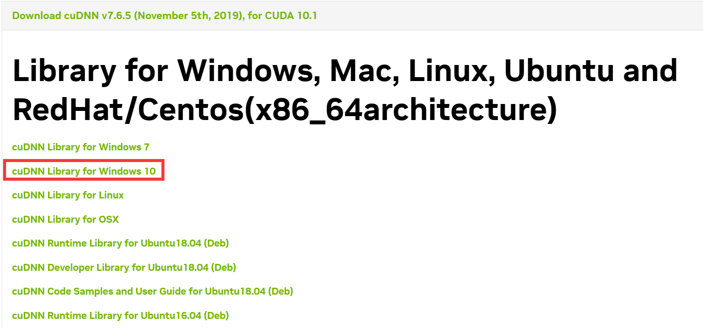
下载之后会得到一个cudnn-10.1-windows10-x64-v7.6.5.32.zip的压缩包，将其解压。
将解压的得到的文件三个文件
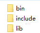
，都复制到 C:\Program Files\NVIDIA GPU Computing Toolkit\CUDA\v10.1文件下面。这时CUDA的环境已经配置好了在cmd命令行中输入
pip install tensorflow-gpu==2.3.0 -i https://pypi.mirrors.ustc.edu.cn/simple
然后等待安装成功即可。
下载本地训练代码，进入连接之后，可以点击Download ZIP进行下载压缩包。
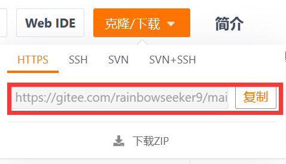
将压缩包解压，任何位置都都可以，只要你记得解压到哪里了。
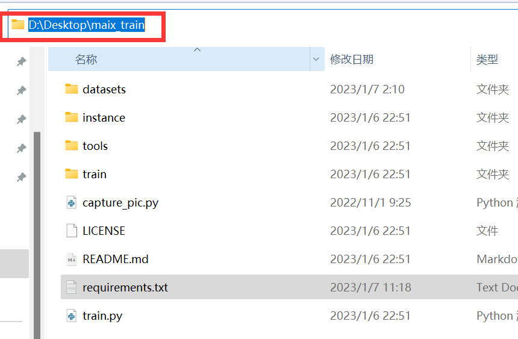
将cmd切换到你文件保存的路径下:
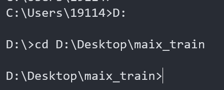
输入
xxxxxxxxxxpip install -r requirements.txt -i https://mirrors.aliyun.com/pypi/simple/
等待全部包的安装结束就可以了。
打开MaixPy IDE，点击左侧蓝色文件夹，打开maix_train文件夹中的capture_pic.py文件。
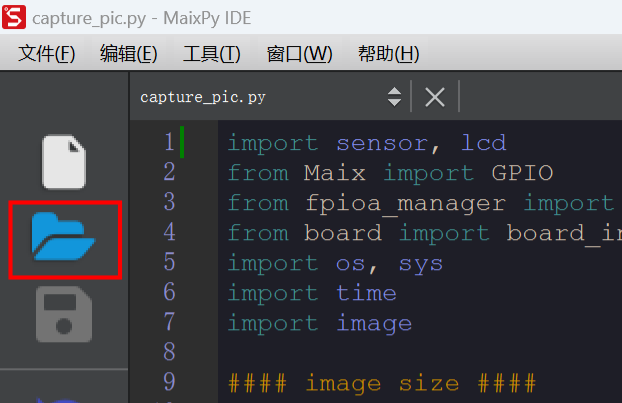
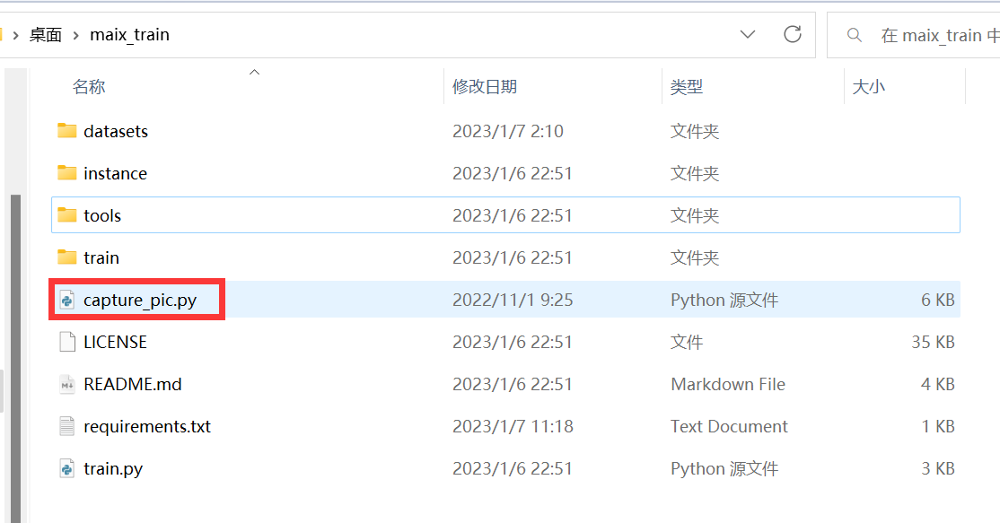
插入sd卡，将k210通过数据线连接到电脑，然后点击左下角连接。
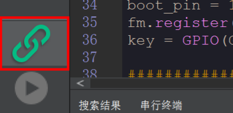
连接成功后，在MaixPy IDE的最上面一行工具里选择将打开的脚本保存到开发板的 boot.py，等待完成后为k210重新上电（无需再点击MaixPy IDE左下角连接）。
对需要识别的物品拍照，按一下k210左侧按键，照片便会自动保存至sd卡中，效果如下图所示。
你可以一次性拍入多个数字，也可以为每个数字单独拍照。但是需注意每个数字需要不同角度拍到，且被拍到的次数必须大于100，否则训练出的模型可能过拟合，识别效果不好。
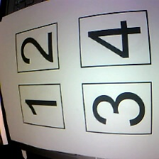
在拍摄完近千张照片后，便可以正式的标注过程。
在cmd命令行输入
xxxxxxxxxxpip install labelimg
然后启动labelimg
xxxxxxxxxxlabelimg
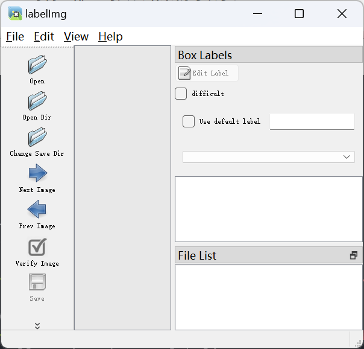
在datasets文件夹下新建一个文件夹用于保存你的数据集，这里我的数据集名称叫做number1_8，
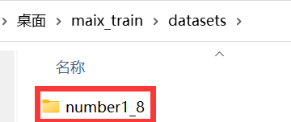
在number1_8文件夹下再新建三个文件夹，其中images放入你刚才拍摄完成的照片，xml文件夹现在为空，labels.txt中写入你检测的物品名称，由于这里检测的是数字1-8，因此在labels.txt写入1-8（每个种类为一行），如下图所示。
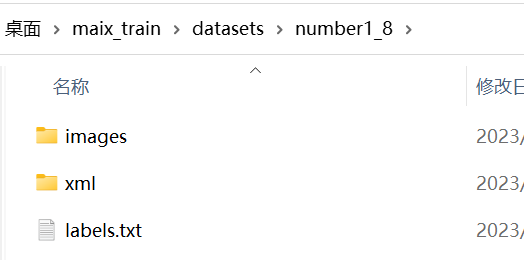
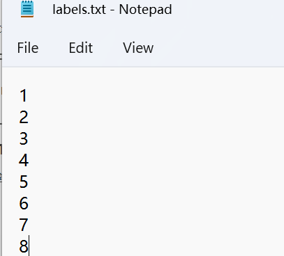
在labelimg里首先选择Open Dir，打开上一步的images文件夹；然后选择Change Save Dir，这里打开刚刚空的文件夹xml，用于保存标注后的框。
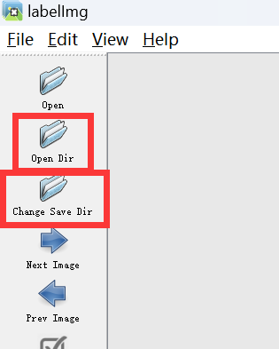
在View里选择 Auto Save mode
一定要确保
Auto Save mode功能打开
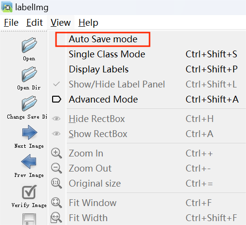
打开后的界面：
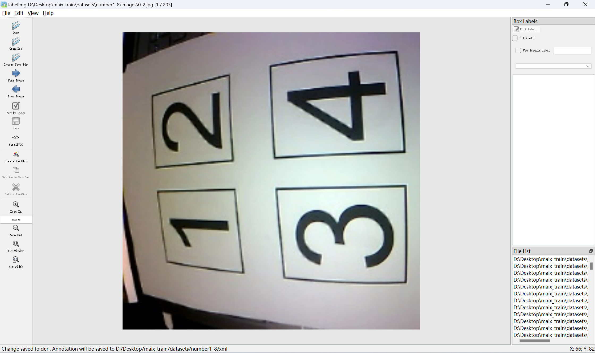
英文输入法下按w，依次点击数字的左上角和右上角，在弹出的小框中输入类别名称，我这里标注的是2，因此输入2，点击OK后依次标注完剩余数字。
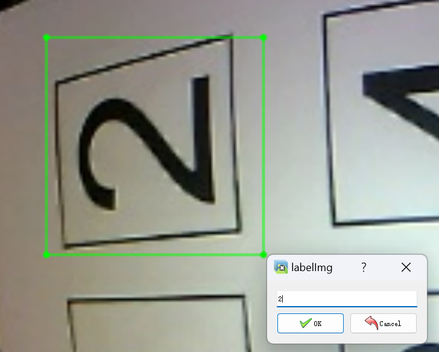
这是标注完一副图片后的效果，注意标注框的数字一定要和真实数字一致，是数字1就弹出的小框里填入1。
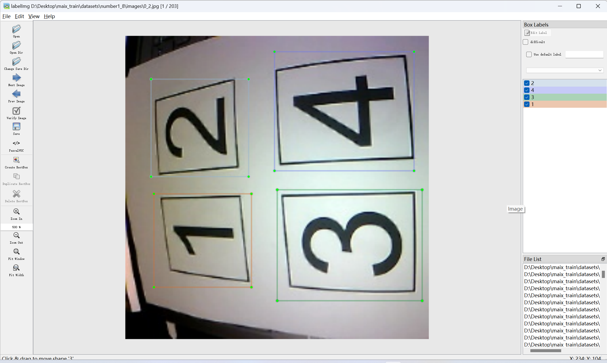
你可以用D键切换到下一副图片，用A键切换到上一副图片，直到所有图片标注完成。
标注（labelimg）是一个非常耗时的过程，但标注的图片数量又很大程度影响了你最终模型识别数字的准确率，因此务必耐心标注完。
先进行初始化
xxxxxxxxxxpython train.py init
开始训练之前，我们需要将自己本地训练的参数进行修改，在instance/config.py中进行修改对应的参数，否则就会出现错误，再进行训练。如果不清楚下面参数的意义，就可以默认使用下面这套。
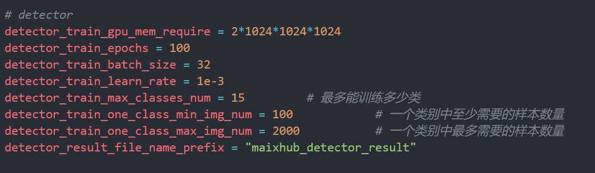
将数据集放到本地训练源码中的datasets文件夹中，然后在有train.py文件层级上启动命令行界面，和安装依赖的时的启动方法一样。
这里输入的命令中，在datasets/后面加的是你自己的所制作的数据集名字，比如我的数据集名称是number1_8，不要上来就直接将复制命令运行。
命令行输入
xxxxxxxxxxpython train.py -t detector -z datasets/[your_dataset_name].zip train
训练完之后就会得到一个out的文件夹，里面的文件就是训练之后得到的模型。
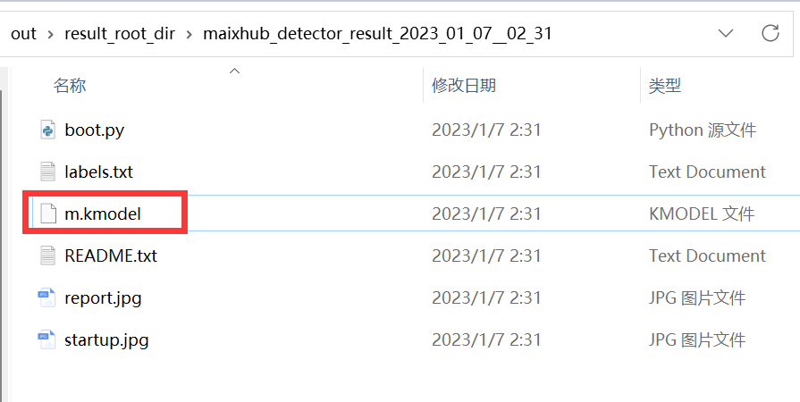
使用kflash_gui将模型烧录至 0x300000，如下图所示，确认无误后点击下载。
注意一定要修改地址为0x300000，否则k210成砖了！
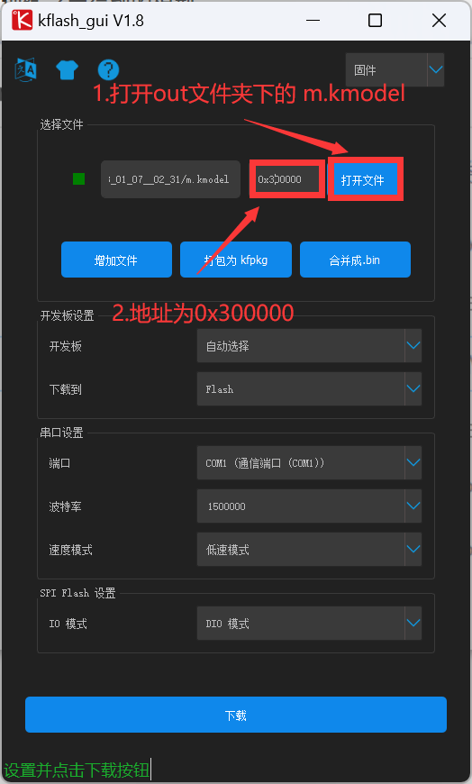
这里提供了一份测试代码， 使用时请先解压，然后将motor.py， pid.py拷贝到sd卡中，最后在Maixpy IDE中打开main.py，如下图所示。
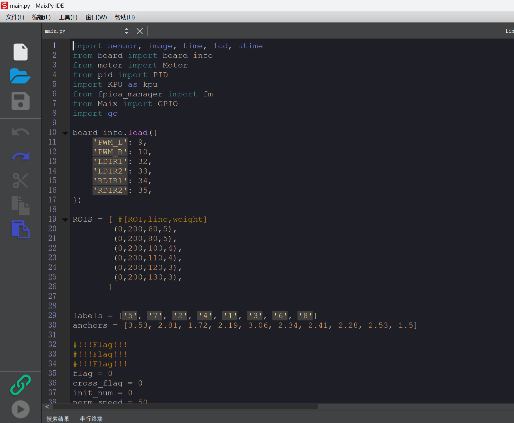
注意：第29，30行的参数来源于你的模型，在你out文件夹下（与
m.kmodel同一目录）有一个boot.py文件，打开后有类似的labels anchors，请自行复制。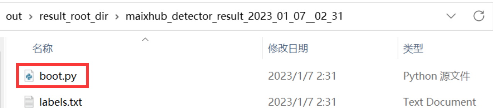
插入sd卡，将k210通过数据线连接到电脑，然后点击左下角连接。
连接成功后，在MaixPy IDE的最上面一行工具里选择将打开的脚本保存到开发板的 boot.py，等待完成后为k210重新上电（无需再点击MaixPy IDE左下角连接）。此时k210将会运行main.py中的内容，等待几秒若屏幕显示图像，则运行正常。
此后，若修改了main.py里的代码，要使其生效，只需重复上面一行话的操作即可。
这种就是没有严格的安装数据集要求来进行制作，检查你的文件夹名字，就可以解决的了，特别是images这个文件夹，容易少了个s